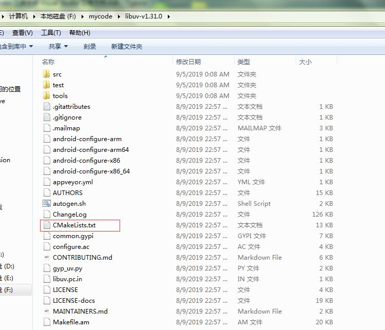
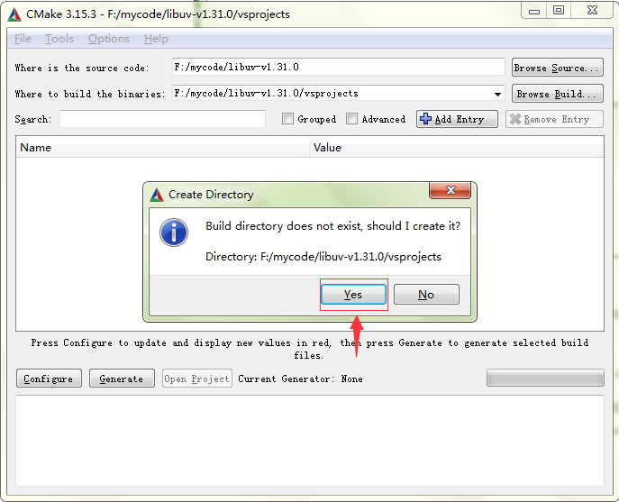
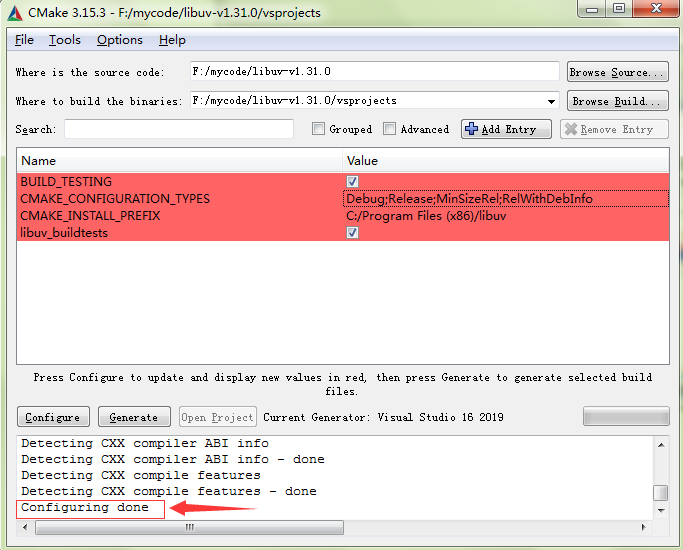
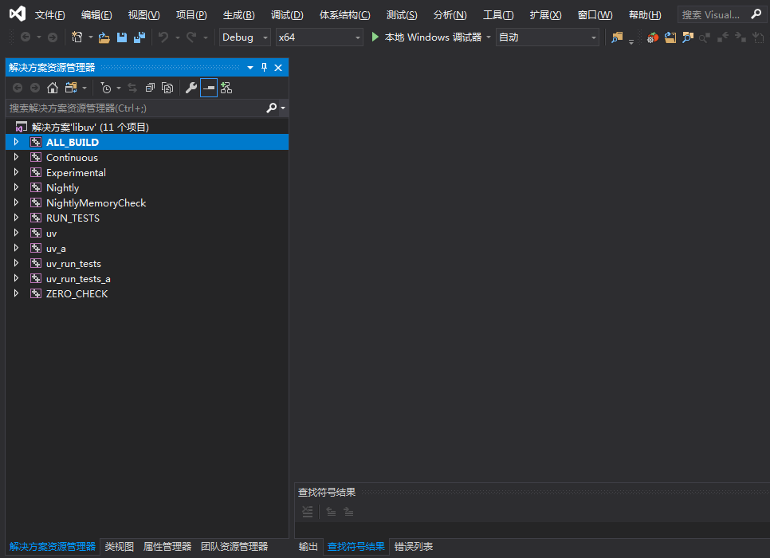

利用 cmake 工具生成 Visual Studio 工程文件
对于习惯了 Visual Studio 强大的管理项目、编码和调试功能的读者来说，在 Linux 下使用 gcc/g++ 编译、使用 gdb 调试是一件何其痛苦的事情，对于大多数的开源 C/C++ 项目，如果我们不在意 Windows 和 Linux 在一些底层 API 接口上的使用差别，想熟悉该项目的执行脉络和原理，在 Windows 上使用 Visual Studio 调试该项目也未尝不可。凡是可以使用 CMake 工具编译的 Linux 程序（即提供了 CMakeLists.txt 文件），我们同样也可以利用 CMake 工具生成 Windows 上的 Visual Studio 工程文件。
这里我们以著名的开源网络库 libuv 为例。
从 libuv 的官方地址提供的下载链接：https://dist.libuv.org/dist/ 下载最新的 libuv 的源码得到文件 libuv-v1.31.0.tar.gz（笔者写作此书时，libuv 最新版本是 1.31.0），解压该文件。作者的机器上我将代码解压至 F:\mycode\libuv-v1.31.0\ ，解压后的目录中确实存在一个 CMakeLists.txt 文件，如下图所示：

启动 Windows 上的 CMake 图形化工具（cmake-gui），按下图进行设置：

设置完成之后，点击界面上的Configure 按钮，会提示 vsprojects 目录不存在，提示是否创建，我们点击 Yes 进行创建。

如果您的机器上安装了多个版本的Visual Studio，接下来会弹窗对话框让我们选择要生成的工程文件对应的 Visual Studio 版本号。读者可以根据自己的实际情况按需选择。我这里选择 Visual Studio 2019。
点击 Finish 按钮后开始启动 CMake 的检测和配置工作。等待一会儿，CMake 底部的输出框中提示 “Configuring Done” 表示配置工作已经完成。

接下来点击 Generate 按钮即可生成所选版本的 Visual Studio 工程文件，生成的文件位于 vsprojects 目录。
我们可以在界面上点击按钮 Open Project 按钮直接打开工程文件，也可以找到对应目录下的 libuv.sln 打开。
打开后如下图所示：

接下来，我们就可以使用 Visual Studio 愉快地进行编译和调试了。
让我们再深入聊一下上述过程：在点击 Configure 按钮之后，和在 Linux 下执行 cmake 命令一样，CMake 工具也是在检测所在的系统环境是否匹配 CMakeLists.txt 中定义的各种环境，本质上是生成了一份可以在 Windows 上编译和运行的代码（也就是说该源码支持在 Windows 上运行） 。因此，对于很多虽然提供了 CMakeLists.txt 文件但并不支持在 Windows 上运行的的 Linux 工程，虽然利用上述方法也能最终生成 Visual Studio 工程文件，但是这些文件并不能在 Windows 上直接无错编译和调试。
由于不同的 CMake 版本支持的 CMakeLists.txt 中的语法可能略有细微差别，有些 CMakeLists.txt 文件在使用上述方法 configure 时可能会产生一些错误，需要读者做些修改才能通过。